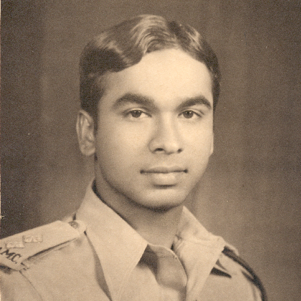
Dr. V joined the Indian Army Medical Corps but had to retire in 1948 after developing rheumatoid arthritis.
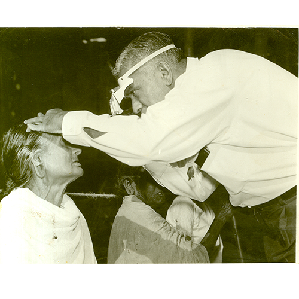
Despite his condition, Dr. V returned to medical school and earned his diploma and masters degree in Ophthalmology.
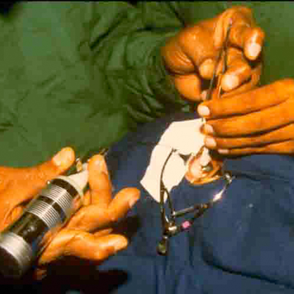
With hard work and determination, Dr. V learned how to hold a scalpel and perform cataract surgery.
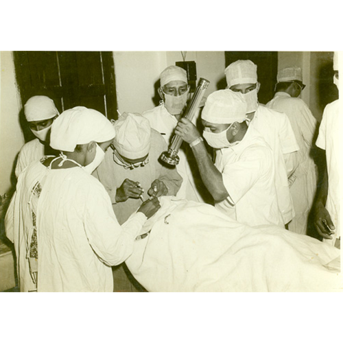
Eventually, he was able to perform more than one hundred surgeries a day.
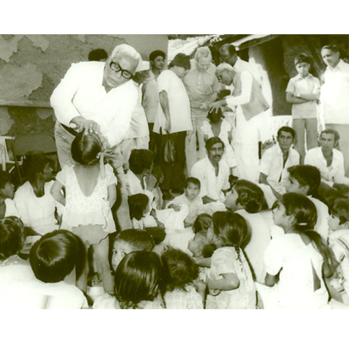
During his period of government service, Dr. V introduced a number of innovative programmes to deal with the problem of blindness in India. He developed the outreach eye camp programmes
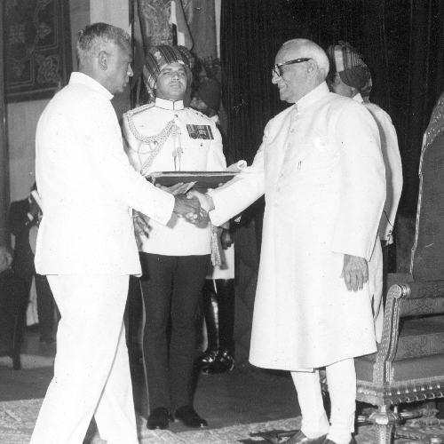
In recognition of Dr. V’s work in the fight against blindness, he received the Padmashree award in 1973 by the Government of India.
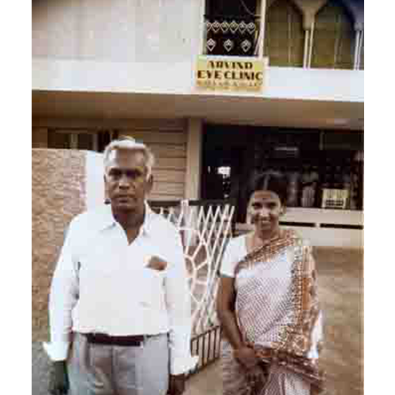
In 1976, after mandatory retirement from government service at age of 58, Dr. V resolved to continue his work in eye care delivery. With support from his family, he founded Aravind Eye Hospital in Madurai , a non profit institution dedicated to providing high quality eye care to all patients who come to its door.

Sir John Wilson, a blind man of great vision and founder of Sight Savers International, greatly influenced Dr. V and would go on to mentor him to approach eye care from a global perspective.
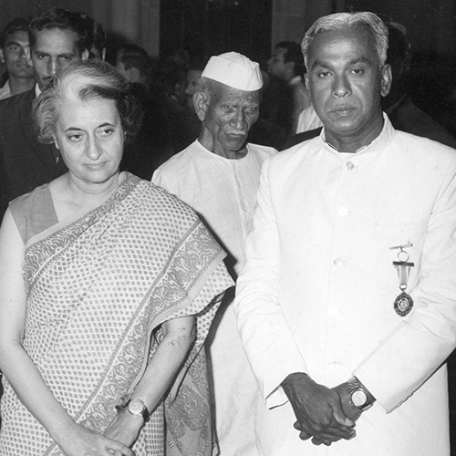
Dr. V with Smt. Indira Gandhi, former Indian Prime Minister, for initiating eye care at national level
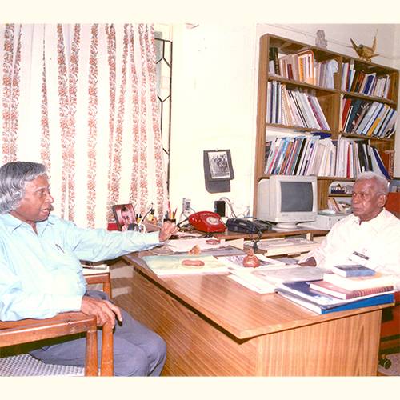
In 1990, Dr. Abdul Kalam had visited Aravind as a patient when he was the Scientific Advisor to the Defense Minister and Secretary and he has described his experience at Aravind in his book ‘Ignited Minds’ – ‘In the Aravind experience, I see the path that we need to take – a transformation of life into a powerful instrument of right action’.

Dr. Abdul Kalam made several visits to Aravind. Encouraging Aravind to adopt technology in all possible ways and pushing the research boundary.
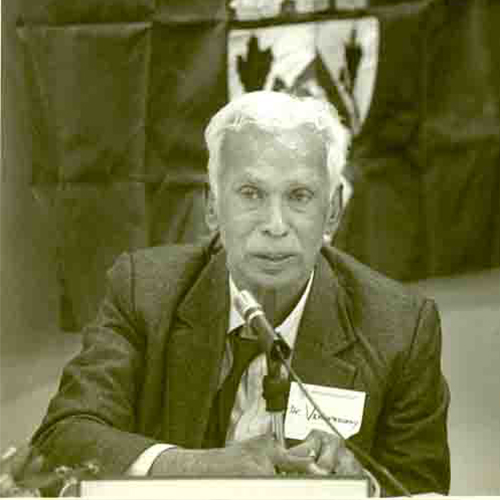
In 1991, as part of the Wit lecture series, Dr. V was invited to deliver an address at the Harvard Divinity School on the theme of living a spiritual life in the contemporary age. The address entitled ‘Illuminated Spirit’, has been published and read by many people.
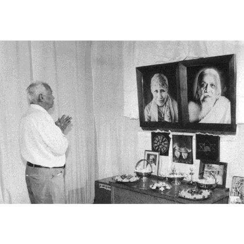
Dr. V begins and ends every day at the hospital with a visit to the meditation room for ‘a silent talk with God’.
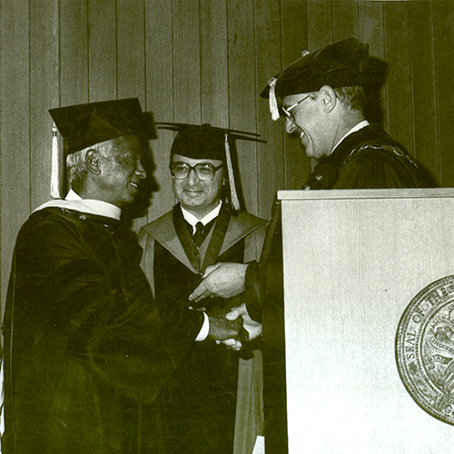
“Honorary Doctor of Science Degree” by the University of Illinois, Chicago on 1985
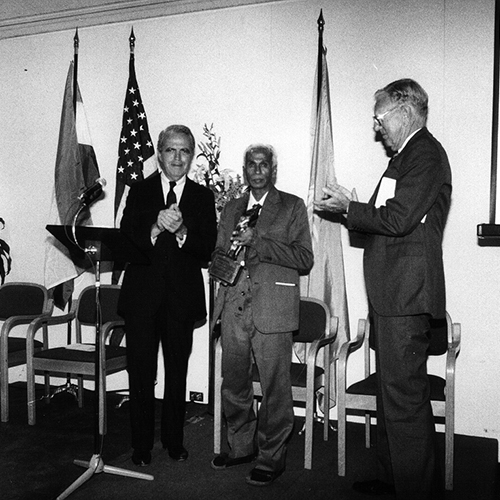
“Helen Keller International Award” in honour of his pioneering works in fighting Cataract Blindness on 1987
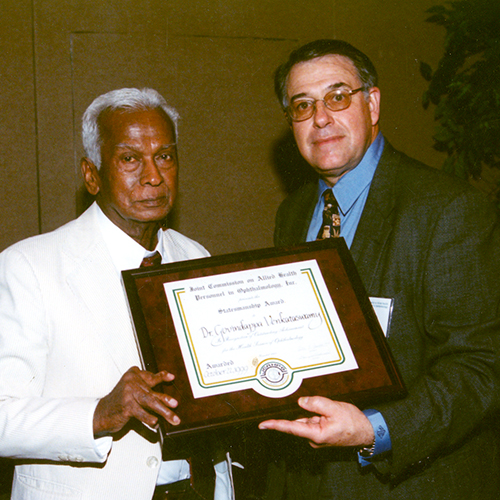
“Statesmanship Award” by Joint Commission on Allied Health Personnel in Ophthalmology, Inc. USA on 1999
"
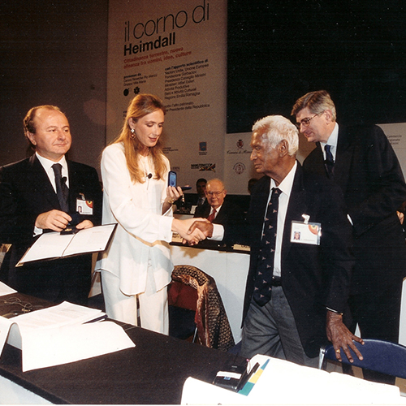
“Medal of the Presidency of the Italian Republic” by the Pio Manzu International Research Centre at Rimini, Italy on 2002
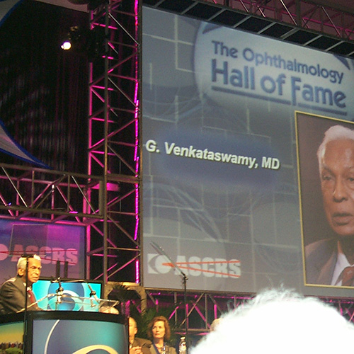
“Hall of Fame” Award by American Society of Cataract and Refractive Surgery, USA on 2004
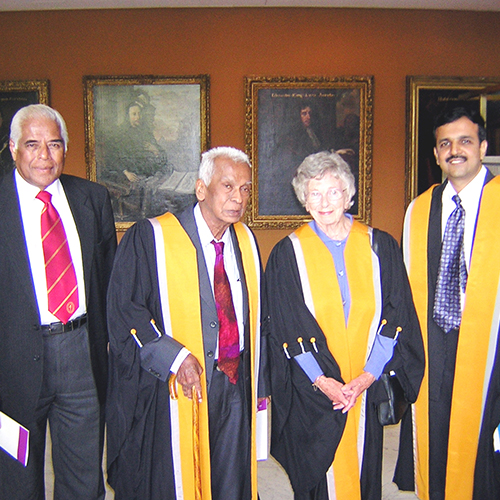
“Honorary Fellowship” by the Royal College of Ophthalmologists, UK on 2004